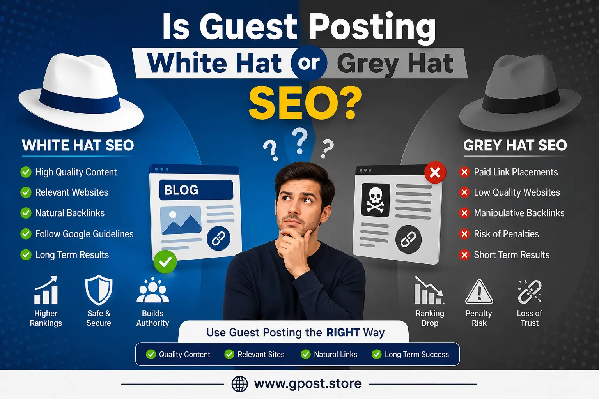

Is Guest Posting White Hat or Grey Hat SEO? Complete Guide for 2026
Is Guest Posting White Hat or Grey Hat SEO? is one of the most important and confusing topics in modern SEO. Many website owners, bloggers, and marketers struggle to understand whether guest posting is safe for Google rankings or if it falls into risky grey hat SEO practices.
In today's SEO world, where Google algorithms are smarter than ever, link building strategies like guest posting must be handled carefully. When done correctly, guest posting can build authority, improve rankings, and generate high-quality traffic. But when misused, it can lead to penalties and loss of organic visibility.
This complete guide will break down everything in simple language so you can clearly understand whether guest posting is white hat, grey hat, or somewhere in between—and how to use it safely for long-term SEO success.
What is Is Guest Posting White Hat or Grey Hat SEO?
Is Guest Posting White Hat or Grey Hat SEO? refers to the classification of guest posting as an SEO strategy used for building backlinks by publishing content on external websites.
In simple terms, guest posting means writing and publishing an article on another website in exchange for exposure and sometimes a backlink to your own site. The SEO value depends on how it is used.
- White Hat: Natural, high-quality, relevant guest posts
- Grey Hat: Paid or semi-manipulated link placements
- Black Hat: Spammy or irrelevant link farming
Why Guest Posting Matters in SEO
Guest posting is still one of the most effective ways to build authority and improve search rankings when done correctly. To understand the full scope of what this strategy can achieve, see how Guest Post Link Building helps websites earn contextual authority from niche-relevant sources.
- Builds high-quality backlinks
- Improves domain authority
- Increases referral traffic
- Strengthens brand visibility
- Helps build topical authority in your niche
Types of Guest Posting Strategies
White Hat Guest Posting
This involves writing high-value content for relevant websites without manipulating search engines.
Grey Hat Guest Posting
This includes paid placements or SEO-driven content designed primarily for link building.
Spam or Black Hat Guest Posting
This involves low-quality sites, irrelevant backlinks, and automated content generation.
Guest Posting Risks for SEO Ranking
Understanding guest posting risks for SEO ranking is important before starting any link-building campaign.
- Google algorithm penalties
- Loss of organic rankings
- Decreased domain trust
- Over-optimized anchor text issues
- Low-quality backlink profile
If guest posting is done on spammy or irrelevant websites, it can harm your SEO instead of improving it. Learning how to fix toxic backlinks from guest posting is an important skill to protect your domain from ranking drops caused by poor link choices.
Difference Between White Hat and Grey Hat Link Building
The difference between white hat and grey hat link building is based on intent and execution.
- White Hat: Focuses on user value and organic backlinks
- Grey Hat: Uses loopholes and semi-manipulated strategies
- Black Hat: Direct violation of Google guidelines
Is Guest Posting Allowed by Google Guidelines?
Is guest posting allowed by Google guidelines is a common question among SEO beginners. The answer is yes, but with strict conditions.
Google allows guest posting only when it is used for editorial purposes, not for manipulating rankings through paid or spammy backlinks.
- Content must be high-quality
- Links must be natural
- No spam or link schemes
- No over-optimized anchor text
Step-by-Step Guest Posting Strategy
1. Research Websites
Find niche-relevant websites with real traffic and authority. Knowing how to qualify websites for guest posting will help you filter out low-quality sites and focus only on placements that deliver real SEO value.
2. Outreach
Contact website owners with personalized emails offering value.
3. Content Creation
Write high-quality, original, and engaging content. Strong content writing for guest posts is what separates accepted pitches from rejected ones and ensures your published articles earn trust with both editors and readers.
4. Link Placement
Use natural and relevant anchor text within the content.
Common Guest Posting Mistakes
- Using spammy websites
- Over-optimized anchor text
- Buying bulk backlinks
- Low-quality content writing
- Ignoring niche relevance
Pro SEO Tips for Safe Guest Posting
- Focus on niche relevance
- Use branded anchor text
- Build relationships with bloggers
- Mix guest posts with internal linking strategy
- Prioritize quality over quantity
Image Example for Guest Posting Strategy

Visual representation of white hat vs grey hat guest posting SEO strategies
Is It Still Worth It in 2026?
Yes, guest posting is still worth it in 2026 if done correctly. It remains one of the most powerful ways to build authority and improve SEO rankings.
When to Avoid Guest Posting
- When websites have no real traffic
- When links are paid without disclosure
- When content is irrelevant or spammy
- When sites are part of link networks
FAQs
Is guest posting white hat or grey hat SEO in 2026?
Guest posting is mostly considered grey hat SEO in 2026, depending on intent, link quality, and whether links are natural or manipulated for ranking gains.
What is guest posting in SEO and how does it work?
Guest posting involves publishing content on external websites to earn backlinks, increase authority, and drive organic traffic through relevant niche placements.
What are the risks of guest posting for SEO backlinks?
Low-quality guest posting can trigger spam signals, reduce trust, and cause ranking drops if links come from irrelevant or paid link networks.
Guest posting vs natural backlinks: which is better for SEO?
Natural backlinks are safer and more trusted by Google, while guest posting offers faster control over links but requires careful quality management. Reading about Guest Posting vs Niche Edits can help you decide which approach fits your current SEO goals and budget.
How to do guest posting for SEO safely and effectively?
Focus on high-authority niche sites, write valuable content, avoid spam networks, and ensure backlinks are placed naturally within relevant articles.
What is the best guest posting SEO strategy in 2026?
The best strategy is targeting relevant websites, using contextual backlinks, and maintaining content quality to ensure long-term ranking stability and authority growth.
How does guest posting impact Google rankings and indexing?
Guest posting can improve rankings when links are relevant and natural, but poor-quality or manipulative links may be ignored or devalued by Google algorithms.
Which tools help in guest posting outreach and SEO research?
SEO tools like Ahrefs, SEMrush, and Google search operators help find outreach sites, analyze competitors, and identify strong backlink opportunities.
How does guest posting help in building domain authority and traffic?
Guest posting increases domain authority by earning contextual backlinks and referral traffic from niche-relevant websites with strong audience engagement.
What is the future of guest posting in SEO and Google updates?
Guest posting will remain useful, but future Google updates will prioritize relevance, natural links, and content quality over mass or spam link building.
Conclusion
Is Guest Posting White Hat or Grey Hat SEO? depends entirely on how you use it. If you focus on quality, relevance, and natural link building, it is a powerful white hat SEO strategy.
However, if you use it for spammy backlinks or paid link manipulation, it becomes a grey hat risk that can harm your rankings.
To stay safe, always prioritize quality content, follow Google guidelines, and build backlinks naturally over time.
For advanced outreach techniques, you can explore Guest Posting Outreach to improve your link-building process safely and effectively.
If you want to understand modern SEO strategies in depth, check SEO Backlink Strategy 2026 – What Actually Works (Guest Posting Case Study) for real-world ranking insights.